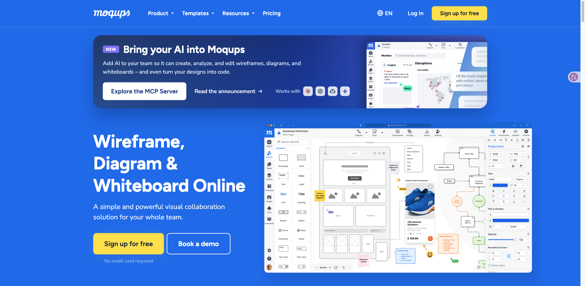

线框、流程图和原型放在同一个画布里，先用灰阶把结构说清楚。
复刻「移动端注册流程」：三个灰阶线框 + 下方对应流程图
Moqups 的视觉语言：纯灰阶线框 —— #eee 填充、#ccc 边框、灰色占位条代表文字和图片，连按钮都是灰的。它刻意不带品牌色，因为线框阶段要讨论的是结构，不是视觉。下方流程图沿用同一套灰色语言，和线框是同一张画布上的两块。

一个 Web 应用，把线框、mockup、流程图、交互原型和团队标注放在同一份文档里。内置大量 UI 控件库（按钮、表单、导航、设备边框），拖出来就能拼界面，再连成可点击的原型。
典型用法：产品经理在需求评审前拉一套线框，顺手把用户流程画在同一页，讨论时不用在两个工具之间跳。